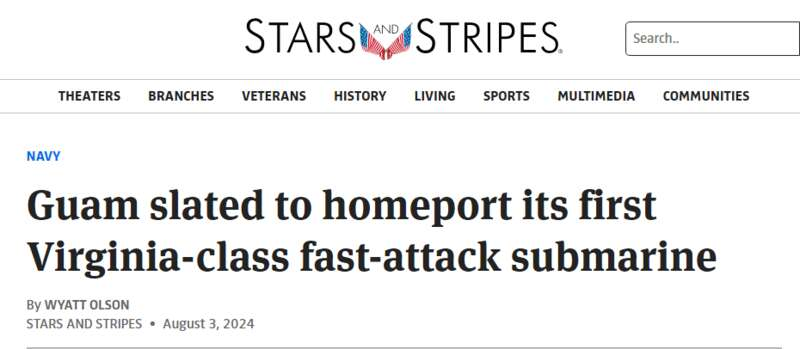
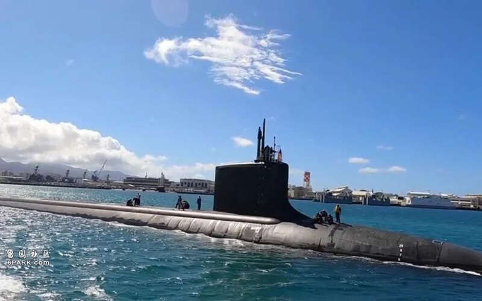
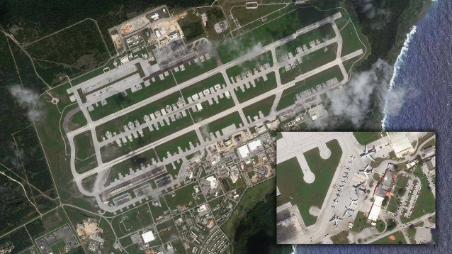
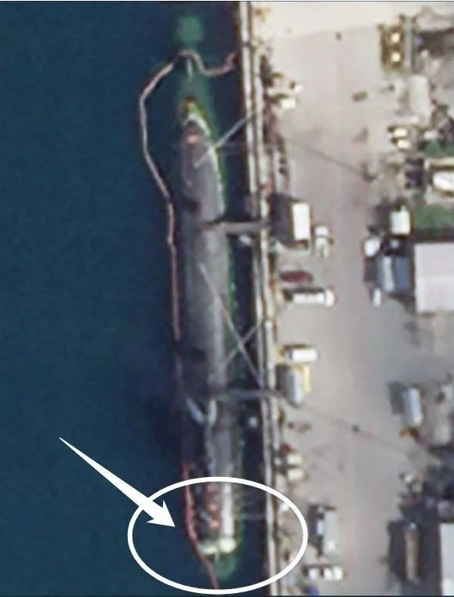

作为美军在太平洋地区战略布局的重要枢纽，关岛的地位日益重要。美国《星条旗报》3日称，美国海军首次将“弗吉尼亚”级攻击核潜艇的母港设置在关岛——这里将成为美国海军最先进攻击核潜艇的新家。


报道称，美国太平洋舰队潜艇部队发言人里克·摩尔中校透露，“弗吉尼亚”级攻击核潜艇“明尼苏达”号预计将于10月1日开始的新财年进驻关岛，成为阿普拉海军基地的新成员。他表示：“我们致力于展示我们最有能力的平台，以维护印太地区的和平与稳定。“虽然我目前无法讨论具体细节，但美国海军定期评估其海外部队的部署，包括驻扎在关岛的前沿部署最新潜艇。”
据介绍，“明尼苏达”号于2013年服役，目前驻扎在珍珠港-希卡姆联合基地。7月初，它在夏威夷珍珠港海军造船厂完成了为期两年的中期大修。目前在关岛部署有5艘“洛杉矶”级攻击核潜艇，包括“安纳波利斯”号、“杰斐逊城”号、“阿什维尔”号、“斯普林菲尔德”号和“基韦斯特”号。其中“基韦斯特”号在服役35年后已经于2023年返回本土等待退役，“明尼苏达”号就是接替它继续强化美国海军在西太平洋地区的水下舰队。
报道提到，“弗吉尼亚”级核潜艇是冷战时期建造的“洛杉矶”级攻击核潜艇的接替者，它的作战任务范围更广，包括反潜战、水面舰艇战、对地攻击、监视和侦察等。“弗吉尼亚”级尤其擅长在环境复杂的沿海地区作战，它的鱼雷室经过改进后还可以容纳大量特种作战部队及其装备执行由海到陆的渗透作战。
至于为何要将这种当前美国海军最先进的攻击核潜艇部署到关岛，《星条旗报》毫不掩饰地表示，这是“因为中国继续扩大其海军在该地区的野心，关岛对五角大楼的印太战略越来越重要”。报道描述称，关岛是“美中发生冲突时的关键枢纽”，因为它是美国最西端的领土，距离南海也最近。

安德森空军基地
为此，关岛正被五角大楼打造成“超级军营”，这里部署有美国空军的安德森基地、美国海军的阿普拉基地和美国海军陆战队的布拉兹营地。其中安德森基地轮番部署有美国空军的战略轰炸机以及庞大的加油机、运输机等辅助机型，还配备了完善的维护设备和弹药、燃料存储设施，是美国空军第二岛链上最核心的要地。

停靠在关岛的“康涅狄格”号
阿普拉基地是美国海军在太平洋上最重要的后勤、舰艇维修补给、停泊维修基地之一，可以停靠超级航母这样的庞然大物，也是美军在西太平洋地区唯一的核潜艇基地。但从配套设施方面而言，该基地对于核潜艇的支持力度还有所欠缺。2021年10月2日，美国“海狼”级攻击核潜艇“康涅狄格”号在南中国海巡逻时撞上海底山脉严重受损，它一路挣扎着航行到关岛进行了长时间的紧急抢修。但美国海军发现，阿普拉基地缺乏维修该潜艇所需的干船坞等设施，只能再让这艘受损潜艇冒险横渡太平洋，返回本土大修。为弥补这些不足，美国海军也在计划对阿普拉基地展开全面升级。